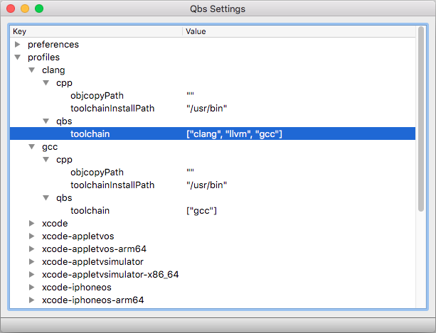

Configuring Profiles and Preferences
Profiles contain properties that apply to one or more projects. They are stored independently of the project files and are usually not shared between build hosts. Typically, profiles contain module properties, such as installation paths of tools or libraries on the host computer. This approach has the following advantages, among others:
- Team members with different computer setups can work together smoothly because no host-specific settings end up in the project files.
- Different versions of a tool or library can be used to build the same project without affecting each other.
For example, a profile for building C++ applications contains at least the installation path and the type of the compiler toolchain. A profile for building Qt applications contains the toolchain-specific properties as well as the path to the Qt installation.
This topic describes profiles stored in the Qbs settings. In some cases it might be beneficial to keep profiles explicitly in the project sources. This can be achieved with the Profile item.
Setting Up Toolchain Profiles
Qbs comes with a helper tool setup-toolchains that can create profiles for many toolchains. Open a terminal window and type:
qbs setup-toolchains --detect
This will automatically set up a profile for each detected toolchain on your computer. You can list the existing profiles by running:
qbs config --list profiles
Some toolchains, especially for bare-metal targets, may require additional module properties. Those can be added with the config or the config-ui tools. Now you should be ready to build your first project with Qbs. Go into examples/helloworld-minimal and type:
qbs build profile:<profile name>
You have successfully built your first Qbs project. If you want to build projects that use Qt, additional steps might be necessary. Please refer to Managing Qt Versions for more information.
Global Preferences
In addition to profiles, Qbs provides some global preferences such as qbsSearchPaths and defaultProfile.
Managing Profiles and Preferences
You can use the config command to manage all Qbs configuration settings, such as profiles and global preferences from the command line, for example:
qbs config profiles.<someprofile>.qbs.architecture arm
For convenience, Qbs provides a tool config-ui where you can manage the settings in a hierarchical view.

Qbs Settings displays the keys in the specified settings directory and their values. To expand all keys, select View > Expand All (Ctrl+E or Cmd+E on macOS). To collapse all keys, select Collapse All (Ctrl+C or Cmd+C).
To change the value of a key, double-click it and enter the new value.
To save your changes, select File > Save.
To refresh the settings from the settings directory, select File > Reload.